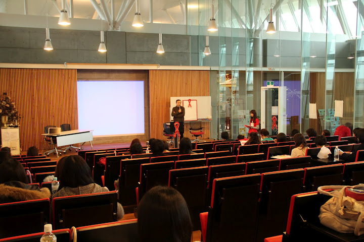

KUIS BATON PROJECT
世界エイズデーである12月1日、講演会「HIV/AIDSの現状・感染予防について」を
7号館クリスタホールにて開催しました。

日常生活ではほとんど触れることのない問題ですが、実際には若者の世代に最も関係しているエイズ問題。一年に一度だけでもこの問題について本気で考え、自分自身を見つめ直す機会があってもいいのでは？というアイデアの元、今年は講演会という場でまずはエイズ問題を知ることから始めました。
ゲストに和田純教授をお招きし、HIV/AIDSの現状、どれだけ身近な問題であるかをお話し頂きました。
和田教授は、数年前からこの問題を平和論の授業で取り上げておられ、快く講演を引き受けてくれました。
豊富な知識と分かりやすい解説で非常に理解しやすい講演内容となりました。
講演会はお昼休みに始まり、休憩を挟んだ2部構成で行われました。
1部と2部の冒頭では、昨年の学内でのエイズ予防啓発活動のMovieを紹介し、和田教授からの講演、質疑応答という流れとなりました。
講演内容は、
■HIV感染とAIDSの違い
■国内外の現状
■感染経路と予防
■検査の重要性
と基礎知識を中心に説明して頂きました。
説明の際にはあなたを守り隊によるオリジナルパンフレットをテキストとして使用して頂き、視覚的にも分かりやすい説明となりました。
感染経路と予防の項目では、普段なかなかオープンに話せないSEXについて触れ、誰もが当事者であることを認識させると同時に、相手に想いやりを持つことが大切だと語られました。
また、検査の重要性では早期発見と他人を感染させない目的も伝えられ、自分と自分のパートナーの未来を考えるならば、検査に行く事やコンドームを使用したSEXをする事は必須であると納得させられる内容でした。
この講演会が、一人でも多くの人が検査に行き、コンドームを使用したSAFETY SEXをし、HIV感染・エイズ発症予防につながるきっかけになればと思います。
検査に行くことも予防することも実は簡単なのです。ただ『知らないまま』、『何もしないまま』にしておくことが問題を大きくするのです。
風邪の時にマスクをするように、SEXの時はコンドームをし、検査に行く事が当たり前になるように、これからも活動を続けていきたいと思います。
講演会に参加して下さいました方々、どうもありがとうございました。
講演会内容はテキストとして
あなたを守り隊
オリジナルパンフレット
が使用されました。
ご参加いただけなかった方々は是非ご覧下さい。